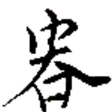
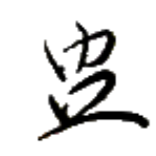
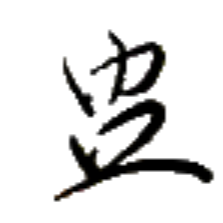

筆兵無傾 クア⤴カウㇰ⤴ムン→アウㇺ⤴ 【筆兵無傾】
[成句] 書記官と兵士の力が均衡していて国家が安泰であること。緯武経文。
国の維持に重要とされ、筆と槍を図案化したシンボルが存在し、アイル共和国国章などに用いられている。
[名詞] セッカイクの役の 1 つ
筆声字集 クア⤴スオㇷ゚⤴マン→ダㇳ⤴ 【筆声字集】
[名詞] 音写語、音訳語、字から語源を見てとりづらい語
値絵 マㇰ⤴レゥㇰ→ 【値絵】
[名詞] （数量の割合や変遷などを見せるための）グラフ
ヤㇰ→ 【律】
[名詞] 法律、ルール
[名詞] ヤㇰ（人名）
[略号] 積律集【積律集】（アイル共和国法務省）

ゼゥㇷ゚· 【享】
[動詞] (自然の恵みなどを)享受する
[略号] 享銭集【享銭集】（アイル共和国経済省）

 
